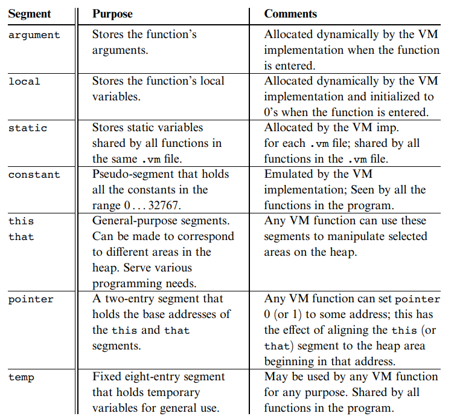

Virtual Machine
Fundamentals

Shreetesh M
Major Types of Virtual Machines
Major Types of Virtual Machines
System VM
Language VM
- Also known as Hardware VM
- Also known as Process VM
- Simulates an entire computer system to behave like another system
- Simulates only a runtime environment
- For example, running Mint OS inside a Windows machine
- For example, converting Java bytecode to machine code in the JRE
-
Examples: Oracle VirtualBox, VMWare

-
Examples: JVM, Dalvik, CLR

So, What Should a Language VM Do?
So, What Should a Language VM Do?
So, What Should a Language VM Do?
Other Execution Models:
-
Interpreted Execution: VM directly executes
.vmcin its environment without a specific translation. For example, Dalvik VM. -
Tiered Execution: VM uses a mix of translation and direct
interpetation of
.vmc. For example, JVM.
But What is the use of a VM?
But What is the use of a VM?
But What is the use of a VM?
- 9 monolithic compilers vs 3 frontend and 3 backend.
- Increased portability across multiple hardware due to a common VM code representation.
- Separation of concerns and increased modularity.
- Reduced costs of development overall.
Architectures of VM
- Stack Machine Model - JVM, CLR
- Register Machine Model - Dalvik, Lua VM
- SSA Machine Model - LLVM
- Accumulator Machine Model
- Register-Memory Machine Model
- ...
The Stack Model
The Stack Model
Designing the VM code:
\[\begin{aligned} a & = (2 - x) \times (y + 5) \\
\end{aligned} \]
is translated to →
push 2
push x
sub
push y
push 5
add
mult
pop a
The Stack Model
Designing the VM code:
\[\begin{aligned} a & = (2 - x) \times (y + 5) \\
\end{aligned} \]
push 2
push x
sub
push y
push 5
add
mult
pop a
x
2
The Stack Model
Designing the VM code:
\[\begin{aligned} a & = (2 - x) \times (y + 5) \\
\end{aligned} \]
push 2
push x
sub
push y
push 5
add
mult
pop a
5
y
2 - x
The Stack Model
Designing the VM code:
\[\begin{aligned} a & = (2 - x) \times (y + 5) \\
\end{aligned} \]
push 2
push x
sub
push y
push 5
add
mult
pop a
y + 5
2 - x
The Stack Model
Designing the VM code:
\[\begin{aligned} a & = (2 - x) \times (y + 5) \\
\end{aligned} \]
push 2
push x
sub
push y
push 5
add
mult
pop a
(2 - x) * (y + 5)
The Stack Model
Virtual Memory Segments:

The Stack Model
Virtual Memory Segments:
The Stack Model
Example:
function main
push argument 0
push constant 42
add
pop local 1
main:
li x6, 8200 # x6=8200
lw x6, 0(x6) # x6=8736
lw x6, 0(x6) # x6=65
sw x6, 0(x2)
addi x2, x2, 4
li x7, 42
sw x7, 0(x2)
addi x2, x2, 4
addi x2, x2, -4
lw x6, 0(x2) # x6=42
addi x2, x2, -4
lw x7, 0(x2) # x7=65
add x6, x6, x7
sw x6, 0(x2)
addi x2, x2, 4
addi x2, x2, -4
lw x6, 0(x2) # x6=107
li x7, 8196
lw x7, 0(x7) # x7=8224
addi x7, x7, 4
sw x6, 0(x7)
Project Tips and Experience
Project Tips and Experience
- Do enough research before finalizing idea and implementation.
-
Establish clear communication guidelines between different
teams as early as possible. For VM:
- Compiler team for VM machine model and language
- Assembler team for assembly language and additional custom operators, if any
- Processor team for starting location of memory for VM segments, list of all operators supported, floating point support, size of memory, byte addressable/word addressable, etc.
- Maintain a documentation each by compiler, VM, assembly team and processor team. Communicate regularly.
- Complete your individual team's work in advance. Integrating into a single pipeline will reveal inconsistencies and errors.
- Optimize translated code in compiler and VM stages.
- Try some new features - OS scheduling, support for objects and heap.
- Enjoy the process. There is a lot to learn - implementing all the major CS concepts together.
Project Tips and Experience
Resources:
- The Elements of Computing Systems: Building a Modern Computer from First Principles by Noam Nisan, Shimon Schocken.
- Building a modern computer from first principles playlists.
- JVM and the tiered compilation process.
- How to build a VM (Interpreted execution model) by T Parr.
- RARS simulator for RISV-V.